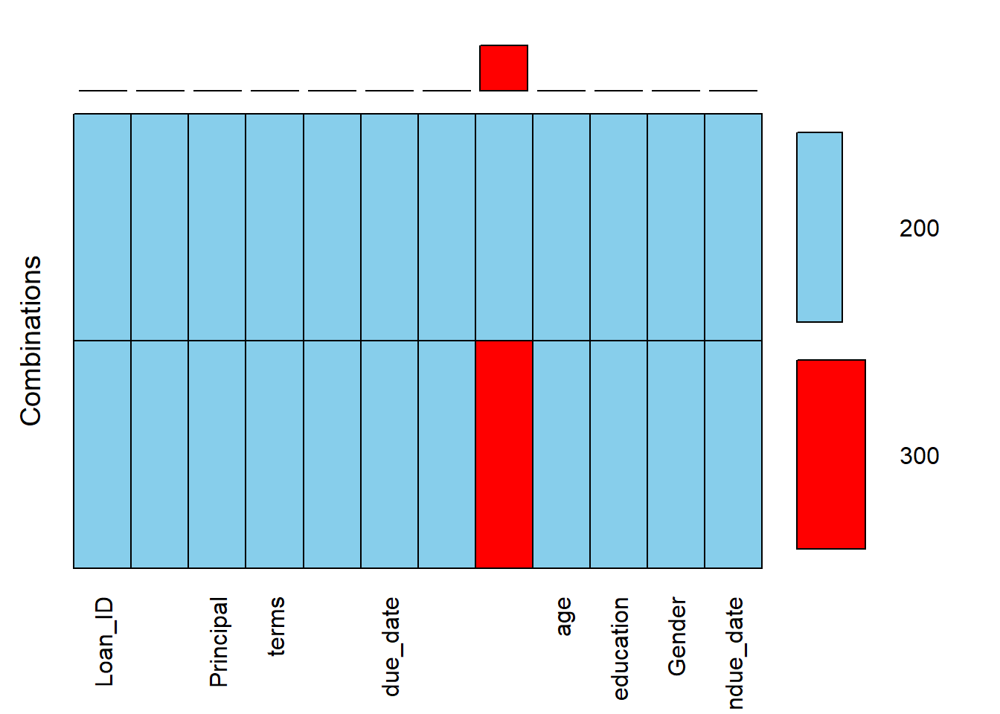

library(dplyr) # Used for almost all data handling
Attaching package: 'dplyr'The following objects are masked from 'package:stats':
filter, lagThe following objects are masked from 'package:base':
intersect, setdiff, setequal, unionloan.df <- read.csv('Loan payments data.csv')
head(loan.df) Loan_ID loan_status Principal terms effective_date due_date
1 xqd20166231 PAIDOFF 1000 30 9/8/2016 10/7/2016
2 xqd20168902 PAIDOFF 1000 30 9/8/2016 10/7/2016
3 xqd20160003 PAIDOFF 1000 30 9/8/2016 10/7/2016
4 xqd20160004 PAIDOFF 1000 15 9/8/2016 9/22/2016
5 xqd20160005 PAIDOFF 1000 30 9/9/2016 10/8/2016
6 xqd20160706 PAIDOFF 300 7 9/9/2016 9/15/2016
paid_off_time past_due_days age education Gender
1 9/14/2016 19:31 NA 45 High School or Below male
2 10/7/2016 9:00 NA 50 Bechalor female
3 9/25/2016 16:58 NA 33 Bechalor female
4 9/22/2016 20:00 NA 27 college male
5 9/23/2016 21:36 NA 28 college female
6 9/9/2016 13:45 NA 35 Master or Above malestr(loan.df)'data.frame': 500 obs. of 11 variables:
$ Loan_ID : chr "xqd20166231" "xqd20168902" "xqd20160003" "xqd20160004" ...
$ loan_status : chr "PAIDOFF" "PAIDOFF" "PAIDOFF" "PAIDOFF" ...
$ Principal : int 1000 1000 1000 1000 1000 300 1000 1000 1000 800 ...
$ terms : int 30 30 30 15 30 7 30 30 30 15 ...
$ effective_date: chr "9/8/2016" "9/8/2016" "9/8/2016" "9/8/2016" ...
$ due_date : chr "10/7/2016" "10/7/2016" "10/7/2016" "9/22/2016" ...
$ paid_off_time : chr "9/14/2016 19:31" "10/7/2016 9:00" "9/25/2016 16:58" "9/22/2016 20:00" ...
$ past_due_days : int NA NA NA NA NA NA NA NA NA NA ...
$ age : int 45 50 33 27 28 35 29 36 28 26 ...
$ education : chr "High School or Below" "Bechalor" "Bechalor" "college" ...
$ Gender : chr "male" "female" "female" "male" ...cat("\n\n")# factor로 변환
loan.df <- loan.df %>%
mutate(Loan_ID = factor(Loan_ID), loan_status = factor(loan_status), effective_date = factor(effective_date),ndue_date = factor(due_date), paid_off_time = factor(paid_off_time), education = factor(education), Gender = factor(Gender))
str(loan.df)'data.frame': 500 obs. of 12 variables:
$ Loan_ID : Factor w/ 500 levels "xqd12160159",..: 472 474 5 6 7 470 8 9 471 10 ...
$ loan_status : Factor w/ 3 levels "COLLECTION","COLLECTION_PAIDOFF",..: 3 3 3 3 3 3 3 3 3 3 ...
$ Principal : int 1000 1000 1000 1000 1000 300 1000 1000 1000 800 ...
$ terms : int 30 30 30 15 30 7 30 30 30 15 ...
$ effective_date: Factor w/ 7 levels "9/10/2016","9/11/2016",..: 6 6 6 6 7 7 7 7 7 1 ...
$ due_date : chr "10/7/2016" "10/7/2016" "10/7/2016" "9/22/2016" ...
$ paid_off_time : Factor w/ 321 levels "","10/1/2016 10:18",..: 171 101 254 211 223 321 99 87 108 234 ...
$ past_due_days : int NA NA NA NA NA NA NA NA NA NA ...
$ age : int 45 50 33 27 28 35 29 36 28 26 ...
$ education : Factor w/ 4 levels "Bechalor","college",..: 3 1 1 2 2 4 2 2 2 2 ...
$ Gender : Factor w/ 2 levels "female","male": 2 1 1 2 1 2 2 2 2 2 ...
$ ndue_date : Factor w/ 25 levels "10/10/2016","10/11/2016",..: 7 7 7 19 8 14 8 8 8 21 ...cat("\n\n")# 결측치 확인
library(VIM) # Missing values processing, aagr()Loading required package: colorspaceLoading required package: gridVIM is ready to use.Suggestions and bug-reports can be submitted at: https://github.com/statistikat/VIM/issues
Attaching package: 'VIM'The following object is masked from 'package:datasets':
sleepaggr(loan.df, prop = F, combined = T, numbers = T, sorVars = T, sortCombs = T)
# 필요한 데이터만 추출
library(lubridate) # Time series data Pre-processing, mdy()
Attaching package: 'lubridate'The following objects are masked from 'package:base':
date, intersect, setdiff, unionloan.df <- loan.df %>%
select("loan_status", "Principal", "terms",
"effective_date", "due_date", "age", "education", "Gender") %>%
# 종속 변수인 loan_status를 성공과 실패, 2개 범주로 변환
mutate(loan_status = factor(ifelse(loan_status == "PAIDOFF",
"Success", "Failure")),
effective_date = mdy(effective_date),
due_date = mdy(due_date))
str(loan.df)'data.frame': 500 obs. of 8 variables:
$ loan_status : Factor w/ 2 levels "Failure","Success": 2 2 2 2 2 2 2 2 2 2 ...
$ Principal : int 1000 1000 1000 1000 1000 300 1000 1000 1000 800 ...
$ terms : int 30 30 30 15 30 7 30 30 30 15 ...
$ effective_date: Date, format: "2016-09-08" "2016-09-08" ...
$ due_date : Date, format: "2016-10-07" "2016-10-07" ...
$ age : int 45 50 33 27 28 35 29 36 28 26 ...
$ education : Factor w/ 4 levels "Bechalor","college",..: 3 1 1 2 2 4 2 2 2 2 ...
$ Gender : Factor w/ 2 levels "female","male": 2 1 1 2 1 2 2 2 2 2 ...